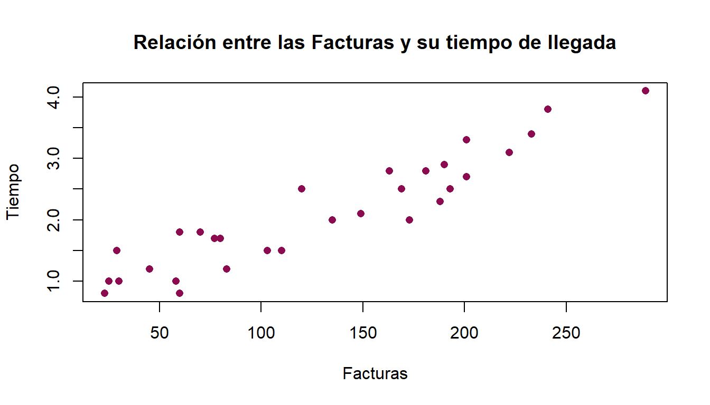
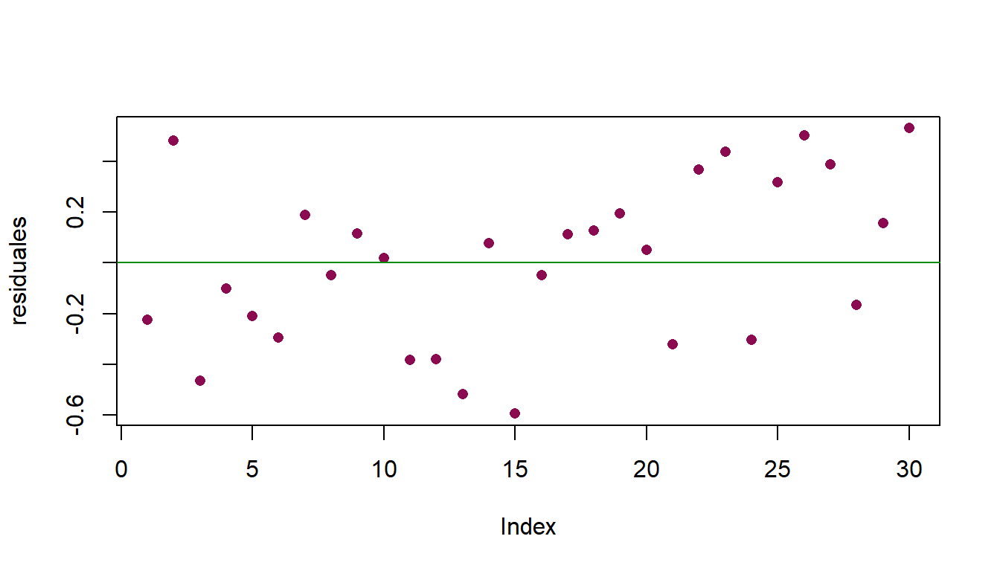

Capítulo 2 Modelo sin intercepto
El modelo anterior es bueno, ya que es un caso general de como se comporta la regresión lineal, sin embargo, si los datos no incluyen el 0 entonces no tendría caso calcular \(\beta_{0}\) ya que no se presenta una intersección con el eje y. La manera en la que se construye el modelo de regresión lineal sin intercepto, es similar la construcción con intercepto. Por lo que de igual manera, la mejor forma de estimar la pendiente de la recta sería usando el método de mínimos cuadrados.
En primera instancia, la recta al no tener intersección con el eje \(y\) con \(y \neq 0,\) \(\beta_{0}=0,\) lo que provoca que la ecuación de la recta de regresión lineal esté conformada por:
\[y=\beta x + \epsilon\]
De igual manera tenemos los mismos supuestos que en la definición 2.1, son:
Supuestos
\(\mathbf{E}[\epsilon_{i}]=0\)
\(\textbf{Var}(\epsilon_{i})=\sigma^2\)
\(\textbf{Cov}(\epsilon_{i},\epsilon_{j})= 0 \ \forall i = 1, \ldots, n \ j=1, \ldots, n \ i \neq j.\)
\(\epsilon \sim N(0,\sigma^2)\)
Al usar estos supuestos se pueden obtener estadísticos importantes como la media y la varianza de \(y\).
Teorema 2.7 Sea una variable de interés \(y\) llamada dependiente, relacionada con una variable explicativa \(x\), sin intercepto entonces:
a) \(\mathbf{E}[y]=\beta x.\)
b) \(\textbf{Var}(y)=\sigma^2.\)
Demostración:
a)
\(\mathbf{E}[y]=\mathbf{E}[\beta x + \epsilon]\)
La estimación es sobre \(y,\) como se mencionó, \(\beta\) es constante y \(x\) es un valor dado. Por lo que:
\(=\beta x + \mathbf{E}[\epsilon]\)
\(=\beta x + 0\)
\(\therefore \mathbf{E}[y]= \beta x. \ \blacksquare\)
b)
\(Var(y)=Var(\beta x + \epsilon)\)
La estimación es sobre \(y,\) por lo que \(\beta\) es constante, \(x\) ya es un valor dado, así:
\(=0+Var(\epsilon)\)
\(\therefore Var(y)=\sigma^2.\ \blacksquare\)
2.1 Estimación por mínimos cuadrados de los parámetros del modelo
Para estimar la pendiente, es decir, \(\beta.\) Se debe de construir al estimador de tal manera que la diferencia entre todos los valores observados y los valores estimados sea 0, es decir, que la línea de regresión pase en la parte media de estos valores de dispersión. A este concepto se le conoce como Residuos sin intercepto.
Definición 2.3 (Residuos). Sea \(y_{i}\) los valores observados, \(\hat{y_{i}}\) los valores estimados mediante la regresión lineal simple sin intercepto. La forma de calcular la desviación de \(y_{i}\) con respecto a su media estimada \(\hat{y_{i}}=\hat{\beta}x_{i}\) para un \(\hat{\beta}\) dado es:
\[e_{i}= y_{i}-\hat{y_{i}}.\]
donde \(e_{i}\) son los Residuos.
De esta manera los residuos se encuentran de la forma:
\[e_{i}=y_{i}-\hat{\beta}x_{i}.\]
Lo que se busca es que la suma de la diferencia de los valores observados menos los valores estimados sea 0, es decir:
\[\sum_{i=1}^{n}e_{i}=0\]
De aquí surge la idea nuevamente de usar el método de Mínimos Cuadrados para estimación de \(\beta.\)
Teorema 2.8 (Mínimos Cuadrados). Si se minimiza la suma de cuadrados de la diferencia de los valores observados y los estimados \(\left(\sum_{i=1}^{n}e_{i}^2\right)\) entonces se tiene como estimador de \(\beta\) a:
- \(\hat{\beta}=\frac{\sum_{i=1}^{n}x_{i}y_{i}}{\sum_{i=1}^{n}x_{i}^2}\)
Demostración:
Se busca minimizar \(\sum_{i=1}^{0}e_{i}^2\) por ello:
\[S(\beta)=\sum_{i=1}^{n}e_{i}^2.\]
Sustituyendo:
\[S(\beta)=\sum_{i=1}^{n}\left( y_{i}-\hat{\beta}x_{i}\right)^2\]
Derivando respecto a \(\hat{\beta}\)
\[\frac{\partial S(\beta)}{\partial \hat{\beta}}=-2\sum_{i=1}^{n}\left(y_{i}-\hat{\beta}x_{i}\right)x_{i}\]
Igualando la derivada a 0 para hallar el punto crítico.
\[-2\sum_{i=1}^{n}\left(y_{i}-\hat{\beta}x_{i}\right)x_{i}=0\]
\[\sum_{i=1}^{n}x_{i}y_{i}-\hat{\beta}x_{i}^2=0\]
\[\therefore \ \hat{\beta}=\frac{\sum_{i=1}^{n}x_{i}y_{i}}{\sum_{i=1}^{n}x_{i}^2}\]
Volviendo a derivar para obtener si es máximo o mínimo.
\[\frac{\partial^2 S(\beta)}{\partial \hat{\beta}^2}=\left(-2\sum_{i=1}^{n}\left(y_{i}x_{i}-\hat{\beta}x_{i}^2\right)\right)'\]
\[\therefore \frac{\partial^2 S(\beta)}{\partial \hat{\beta}^2}=2\sum_{i=1}^{n}\left(y_{i}x_{i}-\hat{\beta}x_{i}\right)^{-1}x_{i}^2 \ > 0.\] Por lo tanto es un mínimo, entonces, el estimador de \(\beta\) que minimiza la suma de cuadrados de los residuales es:
\[\hat{\beta}=\frac{\sum_{i=1}^{n}x_{i}y_{i}}{\sum_{i=1}^{n}x_{i}^2}. \ \blacksquare\]
2.2 Propiedades de los estimadores
Después de haber obtenido el estimador del modelo de regresión lineal simple sin intercepto, se demuestran las propiedades que cumple \(\hat{\beta}.\)
Teorema 2.9 Sea el estimador \(\hat{\beta}\) de \(\beta\) insesgado y cumple con:
a) \(\mathbf{E}\left[\hat{\beta}\right]=\beta.\)
b) \(\textbf{Var}\left[ \hat{\beta}\right]=\frac{\sigma^2}{\sum_{i=1}^{n}x_{i}^2}\)
Demostración:
a) Por hipótesis
\[\mathbf{E}\left[\hat{\beta}\right]=\mathbf{E}\left[\frac{\sum_{i=1}^{n}x_{i}y_{i}}{\sum_{i=1}^{n}x_{i}^2}\right]\]
\[=\frac{\sum_{i=1}^{n}x_{i}}{{\sum_{i=1}^{n}x_{i}^2}}\mathbf{E}[y_{i}]\] Por el teorema 2.7
\[=\frac{\sum_{i=1}^{n}x_{i}\beta x_{i}}{{\sum_{i=1}^{n}x_{i}^2}}\] \[=\frac{\sum_{i=1}^{n}x_{i}^2\beta}{{\sum_{i=1}^{n}x_{i}^2}}\] \[\therefore \mathbf{E}\left[\hat{\beta}\right]=\beta. \ \blacksquare\] Por lo tanto el estimador \(\hat{\beta}\) es insesgado.
b) Para la varianza se puede definir a \(\hat{\beta}\) como:
\[\hat{\beta}=\frac{\sum_{i=1}^{n}x_{i}y_{i}}{\sum_{i=1}^{n}x_{i}^2}\]
Es decir,
\[\hat{\beta}=\left(\frac{x_{1}}{\sum_{i=1}^{n}x_{i}^2}\right)y_{1} + \left(\frac{x_{2}}{\sum_{i=1}^{n}x_{i}^2}\right)y_{2} + \ldots + \left(\frac{x_{n}}{\sum_{i=1}^{n}x_{i}^2}\right)y_{n}\]
Con ésta notación se tiene que:
\[Var\left(\hat{\beta}\right)=Var\left( \left(\frac{x_{1}}{\sum_{i=1}^{n}x_{i}^2}\right)y_{1} + \left(\frac{x_{2}}{\sum_{i=1}^{n}x_{i}^2}\right)y_{2} + \ldots + \left(\frac{x_{n}}{\sum_{i=1}^{n}x_{i}^2}\right)y_{n} \right)\]
\[=\left(\frac{x_{1}}{\sum_{i=1}^{n}x_{i}^2}\right)^2Var(y_{1}) + \left(\frac{x_{2}}{\sum_{i=1}^{n}x_{i}^2}\right)^2Var(y_{2}) + \ldots + \left(\frac{x_{n}}{\sum_{i=1}^{n}x_{i}^2}\right)^2Var(y_{n})\]
\[=\left(\frac{x_{1}}{\sum_{i=1}^{n}x_{i}^2}\right)^2\sigma^2) + \left(\frac{x_{2}}{\sum_{i=1}^{n}x_{i}^2}\right)^2\sigma^2 + \ldots + \left(\frac{x_{n}}{\sum_{i=1}^{n}x_{i}^2}\right)^2\sigma^2\]
\[=\left(\frac{\sum_{i=1}^{n}x_{i}^2}{(\sum_{i=1}^{n}x_{i}^2)^2}\right)\sigma^2\]
\(\therefore Var\left( \hat{\beta}\right)=\frac{\sigma^2}{\sum_{i=1}^{n}x_{i}^2}. \ \blacksquare\)
Con el método de Mínimos Cuadrados no es posible obtener un estimador para la varianza del modelo, sin embargo, se obtendrá bajo el supuesto de normalidad que es el siguiente:
\[\tilde{\sigma}^2=\frac{1}{n-1}\sum_{i=1}^{n}\left(y_{i}-\hat{\beta}x_{i}\right)^2\] La cual es equivalente a ser representada por la siguiente ecuación.
\[\tilde{\sigma}^2=\frac{1}{n-1}\sum_{i=1}^{n}(y_{i}-\hat{y})^2.\] Se elige este estimador ya que cumple con ser insesgado para \(\sigma,\) ésta afirmación se prueba a continuación:
\[\mathbf{E}[\tilde{\sigma}^2]=\mathbf{E}\left[\frac{1}{n-1}\sum_{i=1}^{n}(y_{i}-\hat{y})^2\right]\] \[=\frac{1}{n-1}\sum_{i=1}^{n}\mathbf{E}\left[(y_{i}-\hat{y})^2\right].\] Al ser el segundo momento nos conviene utilizar la siguiente igualdad \(Var(y_{i}-\hat{y})=\mathbf{E}[(y_{i}-\hat{y})^2]-\mathbf{E}^2[y_{i}-\hat{y}],\) debido al corolario 3, \(\mathbf{E}^2[y_{i}-\hat{y}]=0,\) por lo que por facilidad se debe calcular la varianza del estimador \(Var(y_{i}-\hat{y})=\mathbf{E}[(y_{i}-\hat{y})^2]:\)
\[\mathbf{E}[\tilde{\sigma}^2]=\frac{1}{n-1}\sum_{i=1}^{n}\mathbf{E}\left[(y_{i}-\hat{y})^2\right]\]
\[=\frac{1}{n-1}\sum_{i=1}^{n}Var(y_{i}-\hat{y})\]
\[=\frac{\sum_{i=1}^{n}}{n-1}Var(y_{i}-x_{i}\hat{\beta})\]
\[=\frac{\sum_{i=1}^{n}}{n-1}Var\left(y_{i}-\frac{x_{i}\sum_{i=1}^{n}x_{i}y_{i}}{\sum_{i=1}^{n}x_{i}^2}\right)\]
\[=\frac{\sum_{i=1}^{n}}{n-1}Var\left[\left(1-\frac{x_{i}\sum_{i=1}^{n}x_{i}}{\sum_{i=1}^{n}x_{i}^2}\right)y_{i}\right]\]
\[=\frac{\sum_{i=1}^{n}}{n-1}\left(1-\frac{x_{i}\sum_{i=1}^{n}x_{i}}{\sum_{i=1}^{n}x_{i}^2}\right)^2Var[y_{i}]\]
\[=\frac{\sum_{i=1}^{n}}{n-1}\left(1-\frac{x_{i}\sum_{i=1}^{n}x_{i}}{\sum_{i=1}^{n}x_{i}^2}\right)^2\sigma^2\]
\[=\frac{\sum_{i=1}^{n}}{n-1}\left(1-\frac{x_{i}\sum_{i=1}^{n}x_{i}}{S_{xx}}\right)^2\sigma^2\]
\[=\frac{\sum_{i=1}^{n}}{n-1}\frac{[S_{xx}^2-2S_{xx}n\overline{x}x_{i}+(n\overline{x}x_{i})^2]}{S_{xx}^2}\sigma^2\]
\[=\frac{\sum_{i=1}^{n}}{n-1}\frac{[S_{xx}^2-2S_{xx}n\overline{x}x_{i}+n^2\overline{x}^2x_{i}^2]}{S_{xx}^2}\sigma^2\]
\[=\frac{\sum_{i=1}^{n}}{n-1}\left[ 1-\frac{2n\overline{x}x_{i}}{S_{xx}}+\frac{n^2\overline{x}^2x_{i}^2}{S_{xx}^2}\right]\sigma^2\]
\[=\frac{1}{n-1}\left[ 1-\frac{2n\overline{x}\sum_{i=1}^{n}x_{i}}{S_{xx}}+\frac{n^2\overline{x}^2\sum_{i=1}^{n}x_{i}^2}{S_{xx}^2}\right]\sigma^2\]
\[=\frac{1}{n-1}\left[ 1-\frac{2n^2\overline{x}^2}{S_{xx}}+\frac{n^2\overline{x}^2S_{xx}}{S_{xx}^2}\right]\sigma^2\] \[=\frac{1}{n-1}\left[ 1-\frac{2(\sum_{i=1 }^{n}x_{i})^2}{S_{xx}}+\frac{(\sum_{i=1}^{n}x_{i})^2}{S_{xx}^2}\right]\sigma^2\]
\[=\frac{1}{n-1}\left[ n+\frac{-2\sum_{i=1 }^{n}(x_{i})^2+\sum_{i=1}^{n}(x_{i})^2}{S_{xx}}\right]\sigma^2\]
\[=\frac{1}{n-1}\left[ n-\frac{\sum_{i=1 }^{n}(x_{i})^2}{S_{xx}}\right]\sigma^2\]
\[=\frac{1}{n-1}\left[ n-\frac{\sum_{i=1 }^{n}(x_{i})^2}{\sum_{i=1 }^{n}(x_{i})^2}\right]\sigma^2\]
\[=\frac{1}{n-1}\left[ n-1\right]\sigma^2\]
\[ \therefore \mathbf{E}[\tilde{\sigma}^2]=\sigma^2.\] Por lo tanto, \(\tilde{\sigma}\) es insesgado.\(\blacksquare\)
2.2.1 Ejemplo en R-Studio
El gerente del departamento de ventas de la compañía CALLCENT desea predecir, de alguna manera, el tiempo promedio que tardarían en procesar un número dado de facturas. Esto con el objetivo de llevar a cabo una buena logística de diversas operaciones dentro de la empresa.
Se ha recolectado, durante un periodo de 30 días, la información sobre el número de facturas procesadas y el tiempo que tomó (en horas):
| \(Día\) | \(Facturas\) | \(Tiempo\) |
|---|---|---|
| 1 | 149 | 2.1 |
| 2 | 60 | 1.8 |
| 3 | 188 | 2.3 |
| 4 | 23 | 0.8 |
| 5 | 201 | 2.7 |
| 6 | 58 | 1.0 |
| 7 | 77 | 1.7 |
| 8 | 222 | 3.1 |
| 9 | 181 | 2.8 |
| 10 | 30 | 1.0 |
| 11 | 110 | 1.5 |
| 12 | 83 | 1.2 |
| 13 | 60 | 0.8 |
| 14 | 25 | 1.0 |
| 15 | 173 | 2.0 |
| 16 | 169 | 2.5 |
| 17 | 190 | 2.9 |
| 18 | 233 | 3.4 |
| 19 | 289 | 4.1 |
| 20 | 45 | 1.2 |
| 21 | 193 | 2.5 |
| 22 | 70 | 1.8 |
| 23 | 241 | 3.8 |
| 24 | 103 | 1.5 |
| 25 | 163 | 2.8 |
| 26 | 120 | 2.5 |
| 27 | 201 | 3.3 |
| 28 | 135 | 2.0 |
| 29 | 80 | 1.7 |
| 30 | 29 | 1.5 |
Ahora haremos la réplica en R.
Dia=read.table("Problema8T1.csv",sep=",",header=TRUE)
names(Dia)[1] "Dia" "Facturas" "Tiempo" attach(Dia)plot(Dia$Facturas,Dia$Tiempo,type = "p",
col="deeppink4",pch=16, xlab="Facturas", ylab="Tiempo",
main= "Relación entre las Facturas y su tiempo de llegada")
Como podemos observar el gráfico nos grita que exite una posible relación lineal entre el número de facturas y el tiempo empleado para éstas. Para confirmar nuestras sospechas vamos a calcular el coefieciente de correlación de Pearson:
cor(Tiempo,Facturas)[1] 0.9336877Es decir, r=0.9336 indica una fuerte relación lineal positiva entre el número de facturas procesadas y el tiempo. Entonces tiene “sentido” emplear un modelo de regresión lineal simple.
Ahora estimaremos los parámetros \(\beta_{0}\) y \(\beta_{1}\) con el método de mínimos cuadrados visto.
y=Dia$Tiempo
x=Dia$Facturas
y_barra=mean(y)
x_barra=mean(x)
Sxx=sum((x-x_barra)^2)
Sxy=sum((x-x_barra)*(y-y_barra))
beta1=Sxy/Sxx
beta0=y_barra-beta1*x_barraEntonces \(\hat{\beta_{1}}\) será:
[1] 0.01129164y \(\hat{\beta_{0}}\) será:
[1] 0.6417099Ahora estimaremos el parámetro \(\beta\) con el método de mínimos cuadrados para un modelo sin intercepto.
beta_gorro=sum(x*y)/sum(x^2)Entonces \(\hat{\beta}\) será:
[1] 0.01503001Residuales
Ahora calcularemos los residuales, es decir la diferencia entre los valores observados y los valores estimados (\(e_i = y_i-\hat{y}_i\))
Primero calculamos el vector de los valores estimados \(\hat{y}\):
y_gorro=beta0+beta1*xLuego los residuales y los graficamos
e=y-y_gorro
plot(e,type = "p",pch=16, ylab="residuales",col="deeppink4")
abline(a=0,b=0, col="green4")
Para que el modelo propuesto ajuste bien a los datos originales esperaríamos que los residuales estuvieran lo mas cercano al cero (linea amarilla). Mas adelante veremos como usar estos gráficos para verificar algunos de los supuestos del modelo.